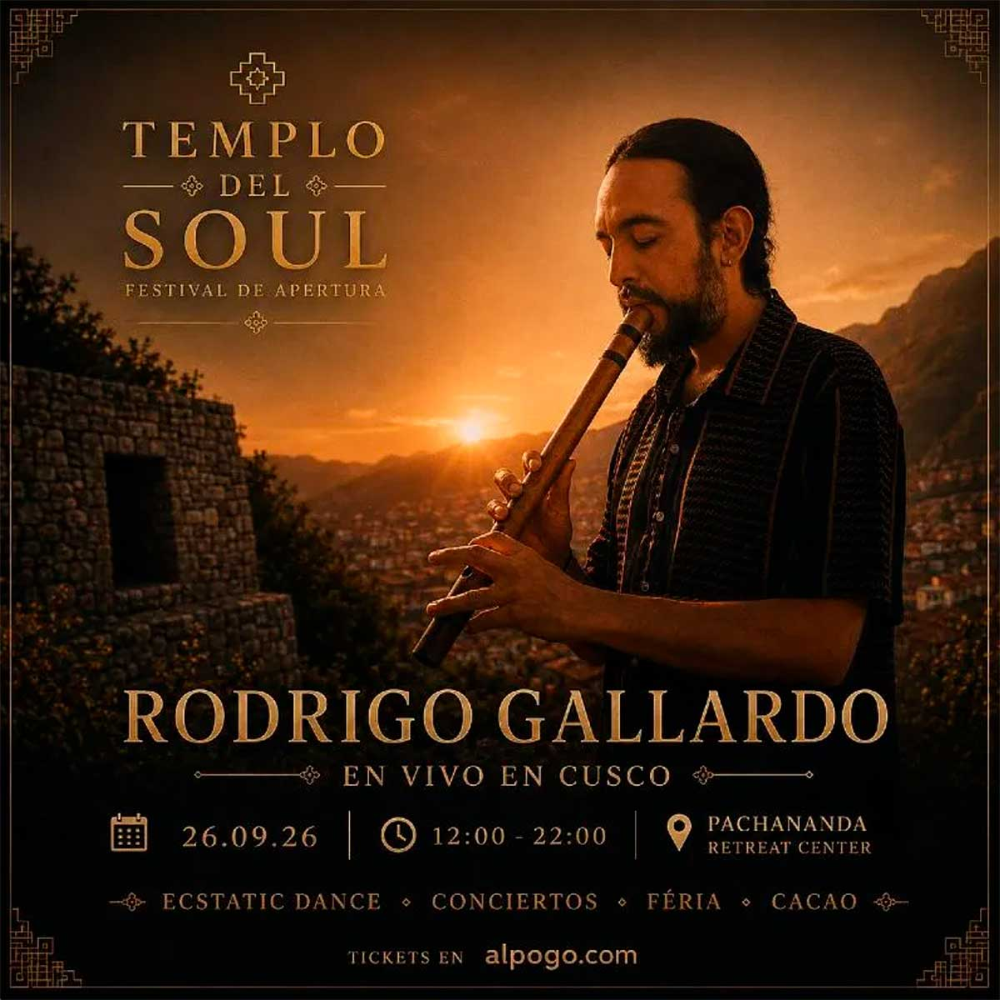

TEMPLO DEL SOUL
fecha: 26/09/26 hora: 12pm - 10pm
lugar: Pachānanda Retreat Center,
Tambillo, Valle Sagrado de los Incas

entradas: TICKETS

Compositor, multiinstrumentista y productor chileno, Rodrigo
Gallardo fusiona las raíces de la música tradicional andina y
latinoamericana con la electrónica orgánica contemporánea.
Cofundador de Matanza y artista solista desde 2016, su música
entrelaza charango, zampoña, guitarra y voz con ritmos electrónicos
y profundas líneas de bajo, creando un viaje sonoro que explora la
conexión, la conciencia colectiva y la memoria ancestral.
Ubicado cerca del increíble
Templo de la Luna de los Incas, a
solo 15 minutos del centro de la
ciudad. Con vistas al Ausangate
desde el techo de la maloca. Este
es, sin duda, el lugar más
sagrado del antiguo Cusco.
El templo fue creado para la
danza, ya que cuenta con un piso
blando que permite jugar, rodar,
etc. El techo es de cristal
transparente, lo que permite ver
las estrellas, el sol y la luna.
Música en vivo, comida
deliciosa, hermosas artesanías,
cacao, talleres. Queremos reunir
a vendedores, artistas e
intérpretes en una feria con
entrada gratuita. Uniendo a la
comunidad y a las familias.
La Danza Extática es un viaje de movimiento libre donde
puedes bailar, expresarte y conectar a través de la música,
sin coreografías ni juicios. Las reglas básicas son sencillas:
no hablar en la pista, no usar teléfonos ni grabar, no
consumir alcohol ni drogas, bailar descalzo cuando sea
posible y respetar siempre el espacio y los límites de los
demás.
LINE-UP:
Rodrigo Gallardo (live)
Qoqeqa
B2B
Fractalika
Ayma
B2B
Inspiral